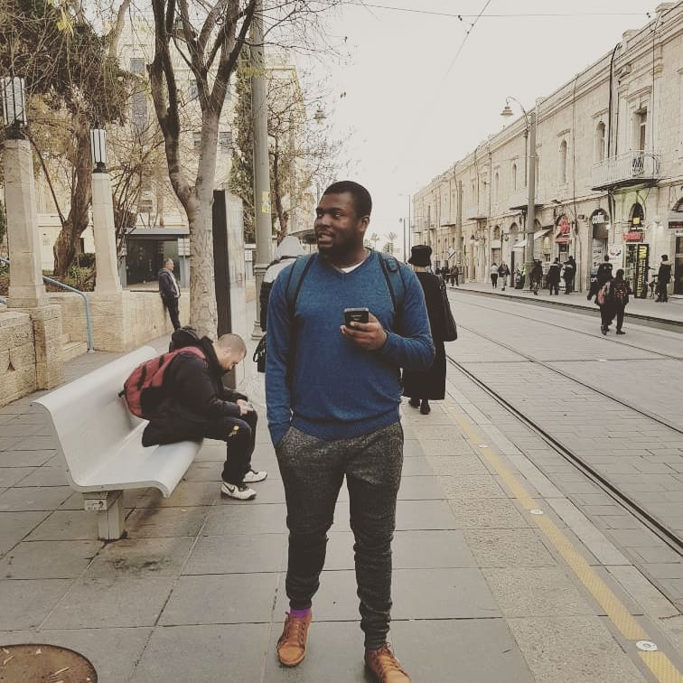

USE CASE

Use Case: Access bet9ja.com
OVERVIEW:
Abayo accesses the betting website and navigates to his
favourite soccer league,check the news injury update, game history and pick his predicted games and places bets. He checks his inbox for new messages.
Usage Preconditions:
- Abayo creates an account
- Abayo links his bank account to his user account
- Abayo makes a deposit via direct deposit or wire deposit
- Abayo places bets and stakes on them.
Usage Post-conditions:
- Abayo is able to place bets of his choice
Actor: Abayo
Goal: Place bets
Abayo's action:
Abayo logs into bet9ja.com
Browser displays homepage
Abayo selects drop down menu News update
Browser displays categories of News update
Abayo selects preferred news category
Browser gets news update from espn.com
Browser displays news feed on bet9ja.com webpage
Abayo selects match-up history from nav-bars
Browser displays match-up history and win statistics
Frequency of Use:
Abayo accesses the web page on a daily basis.
Back to homepage